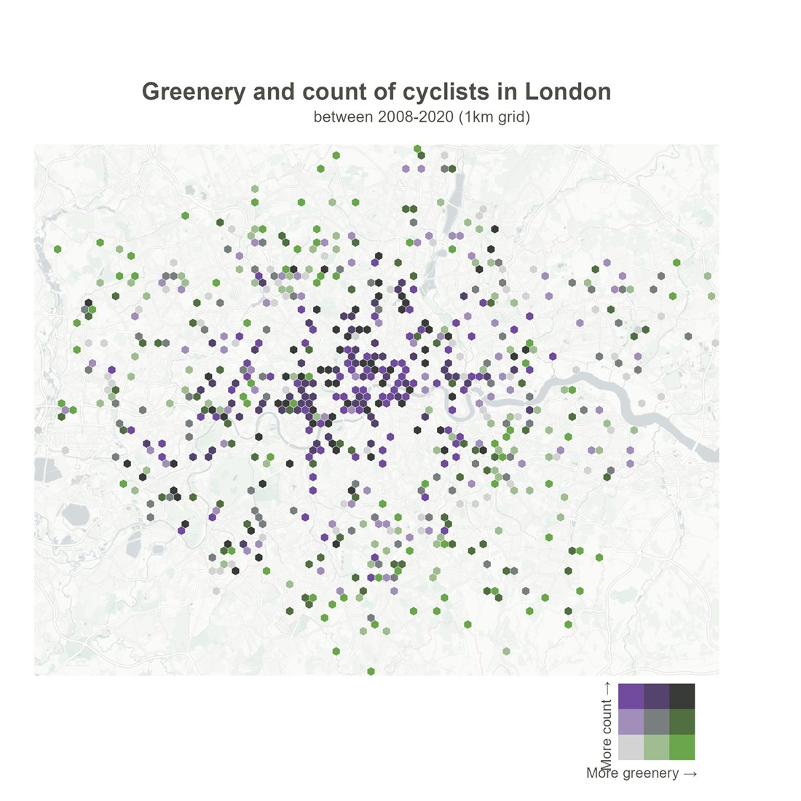
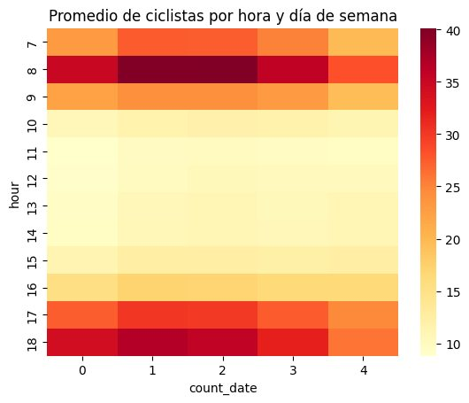
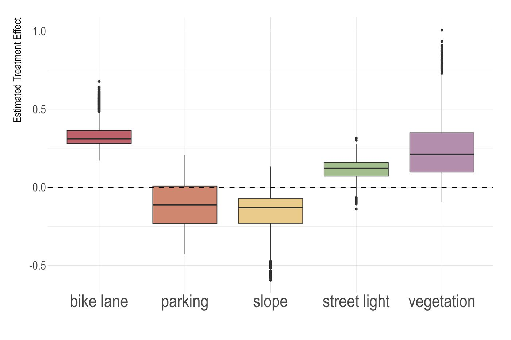
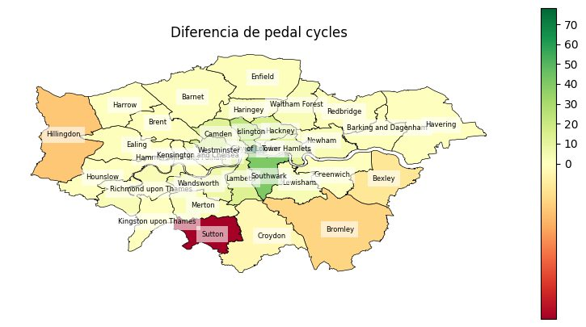

Efecto causal del entorno urbano en el uso de la bici
¿Un carril bici, más vegetación o una cuesta cambian cuánta gente pedalea? Con conteos oficiales de ciclistas en Londres e imágenes de Street View de varios años, estimo estos efectos con cuatro métodos y compruebo si llegan a la misma conclusión.
- Periodo
- 2008 – 2024
- Fuentes
- Conteos del Department for Transport · Street View · OpenStreetMap
- Métodos
- Binomial negativa · g-computation · PSM · Causal Forest
- Hallazgo
- Carril bici ↑ · pendiente ↓
Del píxel a la variable
Para cada punto de conteo descargué las panorámicas de Street View en un radio de 100 m, de todos los años disponibles. Un modelo de segmentación semántica panóptica entrenado en Mapillary Vistas clasifica cada píxel (vegetación, carril bici, acera, vehículo, persona…). La proporción de cada categoría se convierte en una variable del entorno.
Usar series temporales de imágenes es la clave: permite relacionar un cambio en el entorno, como la llegada de un carril bici, con cambios posteriores en el número de ciclistas. Las imágenes se unen a los conteos por punto, año y mes, con una tolerancia de ±31 días.

Cuatro métodos, una pregunta
- Binomial negativa (y ZINB): modela conteos con sobredispersión, controlando año y mes.
- g-computation: estima el efecto medio simulando cada observación con y sin la característica.
- Propensity Score Matching: compara zonas parecidas en todo lo demás.
- Causal Forest: estima efectos heterogéneos (CATE), es decir, cómo cambia el efecto según la zona.
Si métodos con supuestos distintos coinciden en una conclusión, esa conclusión es más fiable.

Resultados
- El carril bici visible tiene la asociación positiva más clara y consistente: aparece con g-computation y tras el matching.
- La pendiente es una barrera física: se asocia a menos ciclistas en todos los métodos y definiciones.
- La vegetación es más matizada: su efecto varía según el contexto urbano, como muestra la dispersión del Causal Forest.
- Con g-computation, la iluminación y el aparcamiento no muestran evidencia suficiente. Además, los conteos se hacen de día, lo que sesga la iluminación.
Un caso concreto: en Sutton, uno de los barrios con más zonas verdes, no renovar un carril bici coincidió con una caída del uso de la bicicleta.


Limitaciones
- Son datos observacionales: los métodos reducen el sesgo, pero no sustituyen a un experimento.
- Queda autocorrelación espacial en los residuos, así que las conclusiones deben leerse con cautela.
- Los conteos diarios se estiman a partir de conteos horarios diurnos.
Python · zensvi · Mapillary Vistas · Causal Forest · PSM · g-computation